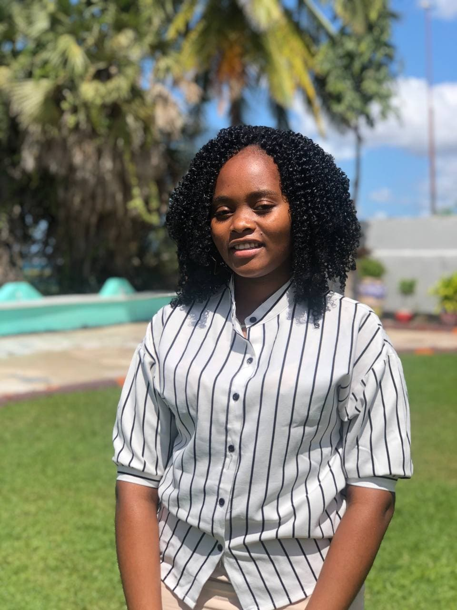
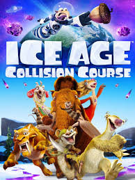

About me

My name is Evelyn Ajuna Rujuguru. I was born on 19th of May
2000 at the Mufindi hospital in Iringa. Currently am 21 years old and a student at
the University of Dar es Salaam. My homeplace is Mwanza, Tanzania but i leave in Dar es Salaam.
At home, we are born three, I have a brother and a young brother and Iam actually the only girl.
Education
I study at the University of Dar es salaam(UDSM), College of Information Communication
and Technology(CoICT). The course that Iam pursuing is called Bsc. In Computer
Engineering and Information Technology(Bsc.CEIT). I began my university level education
in 2019 so Iam in my third year of study. I enjoy my studies and love them, Iam more interested
in software than hardware and Iam specializing more in software skills. Until now the skills
that i have are python programming, arduino programming and embeded systems and Iam
currently learning about web development. I expect to complete my university studies in 2023
Hobies
Baking

Baking cakes has been my hobie since
when i was young because my mom is also a baker therefore i learnt the skills from her.
I started learning on how to bake and decorate cakes when i was four years so its
something that i have grown doing. Apart from that i bake breads at home
Watching Cartoons and animations

In terms of entertainment i enjoy
watching cartoons and other types of animations. Some of my favourites are Ice age, Raph
breaks the internet, Moana, The boss baby and many others. Apart from cartoons i enjoy music
,Indian love stories and Got talent shows most especially American Got Talent. I love
princesses such as princess Sofia, Cinderella and Rapunzel, i really wish that i once dress
like them
So here are some important links that explain my hobies well